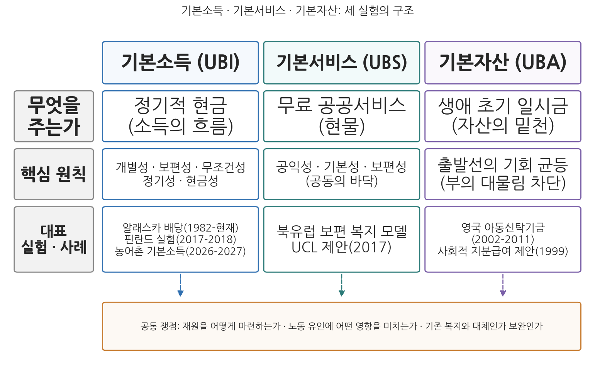

7주차 2차시. 새로운 재정정책 실험: 기본소득, 기본서비스, 기본자산
최종 수정: 2026-08-13 · 이 교재는 학기 중에도 계속 업데이트됩니다
내가 호소하는 것은 자선이 아니라 권리요, 시혜가 아니라 정의다. (토머스 페인, 「토지 정의」, 1797)
이 장에서 배우는 것
2026년 2월 27일, 경기도 연천군의 주민 약 3만 5,000명에게 1인당 월 15만 원의 농어촌 기본소득이 처음 지급되었다. 직업도, 소득도, 재산도 묻지 않았다. 연천군에 사는 사람이면 누구나 받았고, 돈은 지역에서만 쓸 수 있는 지역사랑상품권으로 지급되었다. 연천군은 정부가 2025년 10월 선정한 농어촌 기본소득 시범지역 가운데 하나로, 이 시범사업은 2026-2027년의 2년간 시범 군 주민 전체에게 같은 방식의 지급을 실험한다. 앞서 2022년부터는 연천군 청산면에서 경기도의 농촌기본소득 사회실험이 진행되어 왔으니, 이 작은 군은 한국 기본소득 실험의 실험실인 셈이다. 자격 심사 없이 모두에게 소득을 지급한다는, 얼마 전까지 급진적 사상으로 취급되던 발상이 실제 예산 사업이 되어 집행되고 있는 것이다.
1차시에서 우리는 재정정책의 전통적 틀, 곧 경기 변동에 맞서 총수요를 관리하는 정책을 보았다. 이번 차시는 그 틀 밖에서 자라고 있는 실험들을 다룬다. 저성장과 고용 없는 성장, AI(인공지능)에 의한 일자리 대체 우려 속에서, 고용을 경유해 소득을 보장하던 기존 복지의 회로가 약해지자, 소득과 서비스와 자산을 국가가 직접 보장하자는 세 갈래의 제안이 등장했다. 모든 개인에게 정기적 현금을 주자는 보편적 기본소득, 필수 서비스를 무료로 넓히자는 보편적 기본서비스, 생애 출발점에 목돈을 쥐여 주자는 보편적 기본자산이 그것이다. 셋은 모두 대규모 재정을 요구하므로 재무행정론의 정면 주제이며, 아직 어느 것도 완성된 제도가 아니므로 찬반의 논리를 균형 있게 따져 읽는 눈이 필요하다. 구체적으로 다음을 배운다.
- 보편적 기본소득의 다섯 가지 구성 요소와 정당화 논리, 그리고 핀란드와 한국의 실제 실험 결과
- 보편적 기본서비스의 원칙과 논리, 기본소득과의 논쟁 구도
- 보편적 기본자산의 논리와 사회적 지분급여 제안, 영국 아동신탁기금의 흥망
- 세 실험의 체계적 비교: 재원 소요, 노동 유인, 기존 복지와의 관계
이 장은 하나의 질문을 따라 전개된다. "국가가 모든 국민에게 소득·서비스·자산을 직접 보장하자는 제안들은 어떤 논리로 정당화되고, 실험은 무엇을 보여 주었으며, 재정은 그것을 감당할 수 있는가?"
2.1 보편적 기본소득의 개념·논리·실험을 본다 → 2.2 보편적 기본서비스의 원칙과 논리, 기본소득과의 논쟁을 본다 → 2.3 보편적 기본자산의 논리와 실제 사례를 본다 → 2.4 세 실험을 비교하고 재원·노동 유인·기존 복지와의 관계라는 공통 쟁점을 따진다.
2.1 보편적 기본소득의 논리와 실험
다섯 가지 요소: 무엇이어야 기본소득인가
보편적 기본소득은 흔한 오해와 달리 "가난한 사람에게 주는 돈"이 아니다. 기본소득(Universal Basic Income, UBI)은 모든 사람에게 자격 심사 없이, 개인 단위로, 노동 요구 없이, 무조건 전달되는 정기적인 현금 지급을 의미하며, 다섯 가지 요소를 모두 갖추어야 개념에 부합한다.
기본소득(UBI)은 다음 다섯 요소를 갖춘 소득 보장이다. ① 개별성: 가구 단위가 아니라 개인 단위로 지급한다. ② 보편성: 자격 심사 없이 모든 사람에게 지급한다. ③ 무조건성: 수급의 대가로 노동이나 구직 활동을 요구하지 않는다. ④ 정기성: 일회성이 아니라 정기적으로 지급한다. ⑤ 현금 지급: 현물이나 바우처가 아니라 현금으로 지급한다. 이 기준에 비추면 특정 연령만 받는 제도(부분 기본소득)나 지역화폐로 주는 제도는 순수한 기본소득의 변형태다.
기본소득의 정당화 논리는 세 층으로 정리할 수 있다. 첫째, 철학적 층위에서 기본소득의 목적은 만인의 실질적 자유다(Van Parijs, 1995). 형식적으로는 누구나 자유롭지만 소득이 없는 사람에게 직업 선택의 자유나 여가의 자유는 그림의 떡이므로, 자유를 실질화하려면 물질적 기초가 무조건 보장되어야 한다는 것이다. 둘째, 권리론의 층위에서 옹호자들은 기본소득을 공유 재산(common wealth)에 대한 시민의 배당으로 정당화한다. 토지와 자연자원, 과거로부터 축적된 지식과 기술, 그리고 모두가 만들어 낸 빅데이터가 낳는 수익은 특정인의 몫이 아니라 사회 구성원 모두의 몫이므로, 그 일부를 배당으로 돌려받는 것은 시혜가 아니라 권리라는 논리다. 이 장 첫머리의 페인이 1797년에 토지에 대해 편 논변의 현대판이다. 셋째, 복지제도사의 층위에서 기본소득은 공공부조, 사회보험, 사회서비스 모델에 이은 제4의 모델로 자리매김된다. 앞의 세 모델이 모두 빈곤의 확인이나 기여의 기록, 욕구의 판정이라는 관문을 거치는 데 비해, 기본소득은 관문 자체를 없앤다는 점에서 새로운 유형이라는 것이다.
한국의 현행법은 앞의 세 모델로 사회보장을 정의하고 있다. 기본소득 논쟁의 제도적 좌표를 확인하기 위해 조문을 읽어 보자.
"'사회보장'이란 출산, 양육, 실업, 노령, 장애, 질병, 빈곤 및 사망 등의 사회적 위험으로부터 모든 국민을 보호하고 국민 삶의 질을 향상시키는 데 필요한 소득·서비스를 보장하는 사회보험, 공공부조, 사회서비스를 말한다."
무슨 뜻인가. 현행법의 사회보장은 사회적 위험이라는 조건에 대응하는 세 제도의 목록으로 정의되어 있다. 보험료를 낸 사람이 위험을 당하면 급여를 받는 사회보험(국민연금, 건강보험, 고용보험 등), 생활이 어려운 사람의 최저생활을 국가가 보장하는 공공부조(국민기초생활보장제도), 돌봄과 재활 등 서비스를 제공하는 사회서비스가 그것이다. 위험도 빈곤도 묻지 않고 모두에게 지급하는 기본소득은 이 정의 어디에도 들어맞지 않는다. 기본소득이 제4의 모델이라는 말은 곧, 도입하려면 법체계의 기본 정의부터 다시 써야 하는 제도라는 뜻이기도 하다.
실험은 무엇을 보여 주었나
기본소득은 사상의 역사는 길지만 전국 단위의 완전한 실시 사례는 아직 없으며, 그 대신 부분 실시와 사회실험의 기록이 쌓여 왔다. 가장 오래된 부분 실시는 미국 알래스카주의 영구기금 배당이다. 알래스카는 석유 수입을 적립한 영구기금의 운용 수익을 1982년부터 모든 주민에게 매년 배당해 왔는데, 첫해 배당금이 1,000달러였고 2025년 배당금도 1,000달러였으며 연도에 따라 그 사이를 오르내리거나 3,000달러를 넘은 해도 있다. 금액이 크지 않고 연 1회 지급이라는 한계는 있지만, 자원이라는 공유 재산의 수익을 조건 없이 전 주민에게 배당한다는 점에서 공유부 배당 논리의 실존 사례로 꼽힌다.
사회실험 가운데 가장 널리 인용되는 것은 핀란드의 전국 단위 무작위 실험이다.
핀란드 정부는 2017년 1월부터 2018년 12월까지 2년간, 25-58세 실업급여 수급자 가운데 무작위로 뽑힌 2,000명에게 자산 심사와 구직 의무 없이 매월 560유로를 지급하는 실험을 시행했다. 국가 차원의 무작위 대조 실험으로는 세계 최초였다. 핀란드 사회보험청(Kela)이 2020년 발표한 최종 결과에 따르면, 고용 효과는 크지 않았다. 첫해에는 대조군과 차이가 없었고, 둘째 해 관찰기간(2017년 11월-2018년 10월)의 고용일수가 대조군보다 평균 약 6일 많았는데, 같은 시기 실업급여 전반에 구직 의무를 강화한 별도 정책이 도입되어 이 차이를 기본소득만의 효과로 보기는 어렵다. 반면 삶의 질 효과는 일관되게 나타났다. 수급자들은 삶의 만족도가 높고 스트레스와 우울이 적었으며, 자신의 건강 상태를 더 좋게 평가했고, 타인과 제도에 대한 신뢰가 높았다. (출처: 핀란드 사회보험청 Kela 최종보고서, 2020)
이 사례가 보여 주는 것은 두 가지다. 첫째, "공짜 돈을 주면 일을 안 한다"는 통념은 이 실험에서 확인되지 않았다. 고용은 줄지 않았고 오히려 미미하게 늘었다. 둘째, 그렇다고 "기본소득이 고용을 늘린다"는 반대 통념이 입증된 것도 아니다. 확실하게 확인된 것은 수급자의 웰빙과 심리적 안정의 개선이며, 이는 기본소득의 효과를 고용 지표만으로 평가할 것인가라는 평가 기준의 문제를 제기한다.
한국은 지방자치단체 차원의 실험이 활발했던 나라다. 성남시가 2016년 만 24세 청년에게 분기별 지역화폐를 지급하는 청년배당을 시작했고, 2019년 이 모델은 경기도 전역의 청년기본소득(만 24세, 분기 25만 원, 연 100만 원의 지역화폐)으로 확대되었다. 다만 연령 한정과 지역화폐 지급이라는 점에서 5대 요소 중 보편성·현금성이 제한된 부분 실험이었고, 2024년에는 성남시 등 일부 지자체가 재정 부담과 정책 우선순위 변화를 이유로 지급을 중단하는 부침도 겪었다. 면 단위의 본격 실험은 2022년 5월 경기도가 연천군 청산면에서 시작한 농촌기본소득 사회실험으로, 면의 전 주민에게 직업·소득과 무관하게 월 15만 원의 지역화폐를 5년간 지급하는 설계다. 실험 첫해 청산면 인구는 3,895명에서 4,172명으로 7.1% 늘어 인구 유입 효과가 주목받았으나, 이후 인구가 다시 줄면서 효과의 지속성 논쟁이 이어지고 있다. 그리고 이 장 첫머리에서 본 대로, 2026년부터는 중앙정부(농림축산식품부)가 연천, 정선, 청양, 순창, 신안, 영양, 남해의 7개 군을 시작으로 시범지역을 추가 선정하며 군 단위 농어촌 기본소득 시범사업을 진행하고 있다. 지자체의 실험이 중앙정부의 시범사업으로 올라온 것이다.
기본소득 실험의 결과를 읽을 때는 실험과 제도의 세 가지 구조적 차이를 기억해야 한다. 첫째, 규모다. 소수의 수급자에게 주는 실험에서는 물가나 임금 같은 경제 전체의 반응이 나타나지 않지만, 전 국민 제도에서는 나타난다. 둘째, 기간이다. 2년짜리 한시 실험에서 사람들은 "곧 끝날 돈"에 맞춰 행동하므로, 평생 보장되는 제도에서의 노동·저축 행동과 다를 수 있다. 셋째, 재원이다. 실험은 외부 재원으로 지급만 하지만, 실제 제도는 대규모 증세를 동반하므로 세금을 내는 쪽의 행동 변화까지 합산해야 순효과를 알 수 있다. 요컨대 실험은 수급자 개인의 반응에 대한 증거일 뿐, 제도 전체의 효과에 대한 증거가 아니다. 찬성론이 실험의 긍정적 결과를, 반대론이 실험의 한계를 각각 앞세우는 것은 이 때문이다.
기본소득에 대한 비판은 크게 여섯 갈래다. 감당하기 어려운 재원 소요, 보편 지급 탓에 1인당 급여가 낮아져 정작 빈곤층에게는 불충분한 수혜 수준, 같은 예산을 빈곤층에 집중할 때보다 낮은 정책 효과, 보편적 사회보장 확충에 비해 낮은 소득재분배 효과, 고소득층까지 지급되어 낮은 소비 진작 효과, 그리고 경기와 무관하게 정액이 나가므로 낮은 경기 조절 기능이 그것이다. 마지막 비판은 1차시의 개념으로 옮기면 기본소득이 자동안정화장치로서는 둔한 도구라는 지적이다. 한편 한국에서는 보편형 실험과 나란히 선별형 실험도 진행되었다. 서울시가 2022년 시작한 디딤돌소득(옛 안심소득) 시범사업은 기준 중위소득 85% 이하 가구에 기준소득과 실제 소득의 차액 절반을 지급하는 부(負)의 소득세 계열 제도로, 보편 지급이 아니라 부족분 보충이라는 정반대의 설계다. 같은 시기에 보편형(경기)과 선별형(서울)의 실험이 병행된 것은 국제적으로도 드문 일로, 두 설계의 성과 비교는 한국 소득보장 논쟁의 중요한 실증 자료가 되고 있다.
2.2 보편적 기본서비스
현금이 아니라 서비스로: 공동의 바닥 만들기
보편적 기본서비스는 기본소득의 질문을 이어받되 대답을 바꾼 제안이다. 기본서비스(Universal Basic Services, UBS)는 정부가 서비스를 필요로 하는 모든 국민에게 소득이나 지위와 상관없이 기본적인 공공서비스를 무료로 제공하는 사회보장 모델을 의미한다. 발상의 출발점은 2017년 영국 유니버시티칼리지런던(UCL) 세계번영연구소의 보고서로, 이미 무료로 제공되는 의료와 교육에 더해 주거, 음식, 교통, 정보 영역에서도 양질의 접근 가능한 서비스를 무료로 확대하자는 제안이었다(Portes, Reed & Percy, 2017). 이후 돌봄과 법률 서비스 등으로 논의가 확장되었다(Coote & Percy, 2020).
기본서비스(UBS)는 세 원칙 위에 서 있다. ① 공익성: 공익에 기여하는 집합적 활동이어야 한다. ② 기본성: 국민의 요구를 충족시키는 필수적이고 충분한 수준이어야 한다. ③ 보편성: 지불 능력과 상관없이 모든 사람이 서비스 수혜 자격을 가진다. 필요에 따른 공공서비스 제공의 원칙을 통해 사회에 모두를 위한 공동의 바닥(common floor)을 만드는 것이 목표다.
기본서비스의 논리는 북유럽 보편적 복지 모델의 확장판이라 할 수 있다. 지향하는 것은 경제적 번영 그 자체가 아니라 사회적 번영이며, 빈곤 퇴치와 불평등 축소, 지속가능성 확보가 목표로 제시된다. 이론적 핵심은 공유된 욕구와 공동의 책임의 강조다. 의식주와 이동, 정보 접근처럼 모두가 공유하는 기본 욕구는 개인의 구매력에 맡기지 않고 공동의 책임으로 충족하자는 것인데, 여기에는 경제적 논거가 따라붙는다. 공공서비스에 대한 투자는 건강한 노동력과 교육받은 시민이라는 긍정적 외부효과를 낳고, 집합적 공급은 규모의 경제를 달성할 수 있으며, 현금을 걷어 다시 나누는 과정에서 생기는 재분배의 사중손실을 줄이고, 무엇보다 필수 서비스가 무료가 되면 저소득층의 생활비용 자체가 내려가 같은 명목소득으로도 삶의 수준이 올라간다는 것이다. 기본소득 진영과의 논쟁도 이 지점에서 벌어진다. UCL 연구진은 같은 재원이라면 현금을 나누는 것보다 서비스를 확대하는 쪽이 빈곤과 불평등 감소에 더 효과적이라고 주장하며(Coote, Kasliwal & Percy, 2019), 기본소득 진영은 현물 서비스가 개인의 선택을 국가의 판단으로 대체한다고 반박한다.
기본서비스에 대한 비판은 네 갈래로 정리된다. 첫째, 기본소득만큼 막대하지는 않더라도 서비스의 무료 확대에는 많은 재원이 필요하다. 둘째, 많은 재정과 행정력이 필요한 만큼 중앙집권화와 가부장적 온정주의의 우려가 있다. 무엇이 기본 욕구인지를 국가가 정의하고 표준화된 서비스를 공급하는 구조는, 현금과 달리 개인의 선택을 제약할 수 있다. 셋째, 기본서비스 공급에 큰 역할을 할 지방정부의 역량과 책임 수준이 불명확하다. 넷째, 중앙-광역-기초 정부 간 역할과 재정 분담의 유기적 협력관계를 구축하기 어렵다. 돌봄과 교통 같은 서비스는 결국 지방정부의 손으로 전달되므로, 이 비판은 한국처럼 중앙-지방 재정관계가 수직적인 나라에서 특히 무겁다. 결국 정부의 비전과 역량, 시민사회의 참여를 통해 이 우려들을 어느 정도 극복할 수 있는가가 기본서비스 구상의 관건이다.
한국 헌법은 이미 인간다운 생활의 권리와 국가의 사회보장 의무를 선언하고 있어, 기본서비스 논의의 헌법적 발판이 된다.
"① 모든 국민은 인간다운 생활을 할 권리를 가진다. ② 국가는 사회보장·사회복지의 증진에 노력할 의무를 진다."
무슨 뜻인가. 인간다운 생활의 권리는 특정 계층이 아니라 모든 국민의 권리로 선언되어 있고, 그에 대응하는 국가의 의무가 명시되어 있다. 기본서비스 옹호론은 이 조항을 현금이 아닌 현물의 언어로 실질화하자는 제안으로 읽을 수 있다. 의료보장(건강보험)과 무상 의무교육처럼 한국이 이미 보편 서비스로 운영하는 영역이 있다는 사실은, 기본서비스가 전혀 새로운 발명이 아니라 기존 보편 서비스의 목록을 어디까지 늘릴 것인가의 문제임을 보여 준다.
2.3 보편적 기본자산
소득의 흐름이 아니라 출발선의 밑천
보편적 기본자산은 문제의 좌표를 소득에서 자산으로 옮긴 제안이다. 자산의 양극화가 심한 상태에서는 소득만으로 불평등을 해소하는 데 한계가 있다. 소득 격차는 매달의 차이지만 자산 격차는 출발선의 차이이기 때문이다. 부모의 자산이 자녀의 교육, 주거, 창업 기회를 결정하는 부의 대물림 구조에서 청년들은 기회 균등을 상실하게 되므로, 이들에게 생애 출발점의 밑천, 곧 기본자산을 사회가 형성해 주자는 것이 기본자산(Universal Basic Assets) 구상이다. 사상의 뿌리는 역시 페인이다. 그는 1797년 「토지 정의」에서 토지는 본래 인류의 공유 재산이므로, 사유화된 토지의 지대 일부를 걷어 성년이 되는 모든 사람에게 일시금을 지급하자고 제안했다.
현대의 대표 제안은 애커먼과 알스톳의 사회적 지분급여다(Ackerman & Alstott, 1999). 모든 시민에게 성인이 되는 시점에 8만 달러의 지분(stake)을 일시금으로 지급하고, 재원은 부유세로 조달하며, 수급자가 사망할 때 여력이 있으면 상환하도록 하자는 설계다. 대학 등록금, 창업 자금, 주택 마련처럼 인생의 초기 투자에 쓸 밑천을 부모의 자산이 아니라 시민의 자격에서 얻도록 하자는 것이다. 기본자산은 기본소득에 비해 필요한 재원 규모가 작으면서 계층이동 가능성을 높이는 정책 효과를 기대할 수 있다는 점에서 긍정적으로 평가된다. 매달 소액을 평생 주는 대신 목돈을 한 번 주는 방식이므로 총재정 소요가 작고, 지급 시점을 생애 초기에 집중시켜 기회의 평등이라는 과녁을 정확히 겨눈다는 것이다.
실제로 전국 단위에서 이 구상을 제도화했던 나라가 영국이다.
영국 노동당 정부는 2005년 아동신탁기금(Child Trust Fund)을 도입해, 2002년 9월 이후 태어난 모든 아동에게 250파운드(저소득 가구 아동은 500파운드)의 정부 출연금을 담은 비과세 계좌를 만들어 주고 7세에 같은 금액을 추가 적립했다. 가족이 돈을 보태 불릴 수 있고 아동이 18세가 되면 인출할 수 있는 설계로, "모든 아이가 자산을 가지고 어른이 되게 한다"는 취지에서 베이비본드(baby bond)로 불렸다. 2011년까지 약 630만 개의 계좌가 개설되었고 정부는 총 20억 파운드를 출연했다. 그러나 2008년 금융위기 이후 재정긴축에 나선 연립정부가 2010-2011년에 걸쳐 정부 출연을 중단하면서 제도는 폐지되었고, 이미 만들어진 계좌들만 남아 2020년 9월부터 만기가 도래하기 시작했다. (출처: 영국 국세관세청·Institute for Fiscal Studies)
이 사례가 보여 주는 것은 두 가지다. 첫째, 보편적 자산 형성은 공상이 아니라 실제로 전국 단위에서 시행된 적이 있는 제도다. 둘째, 그러나 효과가 20년 뒤에야 나타나는 제도는 정치의 시간을 견디기 어렵다. 수혜자가 아직 투표권 없는 아동인 제도는 긴축의 칼날 앞에서 가장 먼저 잘렸고, 첫 수혜 세대가 성인이 되기도 전에 제도가 사라졌다. 한국에도 부분적 유사 제도가 있다. 취약계층 아동이 저축하면 정부가 저축액의 2배(월 10만 원 한도)를 매칭 적립해 18세 이후 자립 자금으로 쓰게 하는 디딤씨앗통장(아동발달지원계좌)이 그것인데, 보편형이 아니라 선별형이라는 점에서 기본자산의 원리를 일부만 구현한 제도다.
기본자산의 약점으로는 문턱효과가 지적된다. 지급 대상 연령을 지나 버린 집단들은 세금은 내면서 혜택은 받지 못하므로 제도 도입에 반대할 유인이 있고, 이 문턱효과 탓에 정치적 연합을 만들기 어렵다는 것이다. 목돈을 짧은 기간에 소진해 버릴 위험, 곧 지분 탕진의 우려도 오래된 쟁점으로, 애커먼과 알스톳 스스로 교육 등 용도 제한과 분할 지급 같은 보완 설계를 논의했다. 사용처를 제한하면 온정주의라는 기본서비스에 대한 비판이 되돌아오고, 제한하지 않으면 탕진 위험이 남는 딜레마가 여기에도 있는 셈이다.
2.4 세 실험의 비교와 쟁점
한눈에 보는 세 모델
세 실험은 "국가가 모두에게 기본적인 무엇을 보장한다"는 발상을 공유하지만, 보장하는 것의 형태와 시점이 다르다. 표 7-1과 그림 7-3이 그 구조를 정리한 것이다.
표 7-1. 기본소득·기본서비스·기본자산의 비교
| 구분 | 기본소득(UBI) | 기본서비스(UBS) | 기본자산(UBA) |
|---|---|---|---|
| 보장하는 것 | 정기적 현금(소득의 흐름) | 무료 공공서비스(현물) | 생애 초기의 일시금(자산) |
| 지급 시점 | 평생, 정기적 | 필요할 때 이용 | 성년기 등 생애 초기 1회 |
| 핵심 원칙 | 개별성·보편성·무조건성·정기성·현금성 | 공익성·기본성·보편성 | 출발선의 기회 균등 |
| 재원 소요 | 최대 | 큼(영역별 단계 확대 가능) | 상대적으로 작음 |
| 대표 실험·사례 | 알래스카 배당(1982- ), 핀란드 실험(2017-2018), 한국 지자체·농어촌 실험 | 북유럽 보편 복지, UCL 제안(2017) | 영국 아동신탁기금(2002-2011), 사회적 지분급여 제안 |
| 주요 비판 | 재원, 낮은 1인당 급여, 재분배 효과 | 온정주의, 정부 간 관계, 재원 | 문턱효과, 지분 탕진 위험 |

그림 7-3을 읽는 법은 이렇다. 세 열이 각각 기본소득, 기본서비스, 기본자산이고, 행은 위에서부터 보장의 형태, 핵심 원칙, 대표 실험·사례다. 맨 아래 상자는 세 모델이 공유하는 세 가지 쟁점이다. 이 그림에서 알 수 있는 것은 세 모델이 경쟁 관계인 동시에 보완 관계라는 점이다. 셋은 같은 문제(고용을 경유하는 복지의 약화)에 대해 소득, 소비, 자산이라는 다른 지점에서 개입하므로, 이론적으로는 조합이 가능하다. 그러나 재원이 유한한 현실에서는 어느 하나의 확대가 다른 것의 재원을 잠식하므로, 세 모델의 관계는 결국 우선순위의 정치로 귀결된다.
쟁점 ①: 재원, 산수가 던지는 질문
첫째 쟁점은 재원 소요다. 산수부터 해 보자. 인구 약 5,000만 명에게 1인당 월 30만 원의 기본소득을 지급하면 연간 소요는 5,000만 × 30만 × 12 = 180조 원이다. 2026년 본예산 총지출 727조 9,000억 원(1차시)의 약 4분의 1에 해당하는 돈이 새로 필요하다는 뜻이다. 월 30만 원은 1인 가구 생계급여 수준에도 못 미치는 금액인데도 그렇다. 액수를 최저생계 수준으로 올리면 소요는 300조 원대로 뛴다. 기존 복지지출의 일부 대체, 조세지출 정비, 소득세·부유세 증세, 공유부 과세(토지·데이터·탄소) 같은 재원 방안이 제시되어 있으나, 어느 조합이든 한국 조세부담률의 큰 폭 상승 없이는 성립하지 않는다. 기본서비스는 영역을 골라 단계적으로 확대할 수 있어 일시 소요는 작지만 누적 소요는 크고, 기본자산은 연간 출생아 수가 20만 명대로 줄어든 한국에서 1인당 수천만 원을 지급해도 연간 수조 원대로 감당 가능한 규모라는 점이 대비된다. 재원의 산수는 세 모델 중 무엇이 옳은가를 정해 주지 않지만, 어떤 논의든 "얼마를, 누구에게서, 어떻게 걷어서"를 명시하지 않으면 공허하다는 것을 정해 준다.
쟁점 ②: 노동 유인, 실험과 이론의 간극
둘째 쟁점은 노동 유인이다. 반대론의 우려는 무조건 소득이 근로 의욕을 꺾어 경제의 생산 기반을 잠식한다는 것이다. 찬성론은 두 갈래로 응수한다. 하나는 실증으로, 핀란드 실험을 비롯한 여러 실험에서 유의미한 노동 공급 감소가 관찰되지 않았다는 것이다. 다른 하나는 이론으로, 기본소득은 소득이 늘면 급여가 깎이는 기존 공공부조와 달리 일해서 번 소득이 고스란히 얹어지므로, 수급자가 일을 시작할 때 급여를 잃는 복지 함정이 없어 오히려 근로 유인에 유리하다는 것이다. 그러나 2.1절의 심화 박스에서 본 대로 실험의 증거에는 규모·기간·재원의 한계가 있다. 실험의 소액·한시 지급에서 일을 계속한 사람들이, 평생 보장되는 충분한 액수 앞에서도 같이 행동하리라는 보장은 없으며, 재원 조달을 위한 증세가 일하는 쪽의 유인을 깎는 효과까지 합치면 경제 전체의 순효과는 미지수다. 정직한 결론은 소액 기본소득이 노동 공급을 크게 줄이지 않는다는 것까지는 증거가 있고, 생계를 대체할 수준의 기본소득에 대해서는 증거가 없다는 것이다.
쟁점 ③: 기존 복지와의 관계, 대체인가 보완인가
셋째 쟁점은 기존 복지와의 관계다. 기본소득을 기존 제도에 얹는 보완형은 재원 소요가 극대화되고, 기존 급여를 흡수해 재원을 마련하는 대체형은 다른 문제를 낳는다. 복잡한 선별 행정을 없애 행정비용을 줄이고 낙인과 사각지대를 함께 없앤다는 것이 대체형의 매력이지만, 모두에게 같은 금액을 주기 위해 빈곤층·장애인·노인에게 집중되던 급여를 허물면 가장 취약한 집단의 수급액이 오히려 줄어드는 역진적 재분배가 발생할 수 있다. 기본서비스는 기존 사회서비스의 연장선에 있어 마찰이 작지만 현금 급여와의 우선순위 경쟁을 피할 수 없고, 기본자산은 기존 복지와의 충돌은 가장 작은 대신 당장의 빈곤에는 응답하지 못한다. 요컨대 세 실험 모두 기존 복지국가를 전제로 그 위에 무엇을 얹고 무엇을 덜어낼 것인가라는 재설계의 문제이며, 이는 2주차 1차시에서 본 재정의 소득재분배 기능을 어떤 회로로 수행할 것인가라는 재무행정의 오래된 질문의 새 판본이다.
기본소득 논쟁에서는 찬반 양쪽 모두 상대의 가장 약한 판본을 공격하기 쉽다. 월 10만 원의 부분 기본소득과 월 100만 원의 완전 기본소득은 재원도 효과도 전혀 다른 제도이고, 기존 복지를 유지하는 설계와 흡수하는 설계도 마찬가지다. 어떤 제안을 평가할 때는 반드시 급여 수준, 재원 조달 방식, 기존 제도와의 관계라는 세 가지 설계 변수를 먼저 확인해야 한다. 이 변수들을 특정하지 않은 채 "기본소득은 좋다/나쁘다"를 다투는 것은 내용 없는 논쟁이다. 아울러 이 주제는 현실 정치의 쟁점이기도 하므로, 특정 정치 진영의 구호가 아니라 설계 변수와 실증 증거의 언어로 논증하는 훈련이 필요하다.
이 장에서 본 세 실험은 모두 대규모 재원이라는 벽 앞에 서 있고, 그 벽의 이름은 1차시에서 본 재정의 건전성과 지속가능성이다. 확장하는 재정과 쌓이는 국가채무 속에서 새로운 보장 실험까지 감당하려면, 재정 운용에 어떤 규율이 필요한가. 중간고사 이후 9주차 1차시에서 다룰 재정준칙이 바로 그 질문에 대한 제도적 응답이다.
요약
이 장은 전통적 총수요 관리(1차시)의 바깥에서 성장해 온 세 갈래의 재정정책 실험을 다뤘다. 보편적 기본소득은 개별성, 보편성, 무조건성, 정기성, 현금성의 다섯 요소를 갖춘 소득 보장으로, 만인의 실질적 자유(Van Parijs, 1995)와 공유부 배당의 권리론으로 정당화되며, 공공부조·사회보험·사회서비스로 사회보장을 정의한 현행 사회보장기본법 제3조의 틀 밖에 있는 제4의 모델이다. 알래스카는 1982년부터 석유 수익을 전 주민에게 배당해 왔고, 핀란드의 2017-2018년 무작위 실험(실업자 2,000명, 월 560유로)은 고용 효과는 뚜렷하지 않지만 삶의 질과 신뢰의 개선을 확인했다. 한국에서는 성남 청년배당(2016)에서 경기도 청년기본소득(2019)으로, 연천 청산면 농촌기본소득 사회실험(2022)에서 중앙정부의 농어촌 기본소득 시범사업(2026-2027, 연천 등 시범 군에 월 15만 원 지역사랑상품권)으로 실험이 이어졌으며, 서울의 디딤돌소득(선별·차등형)이라는 반대 설계의 실험도 병행되었다. 보편적 기본서비스는 공익성, 기본성, 보편성의 원칙 아래 의료·교육에 더해 주거, 음식, 교통, 정보 등의 서비스를 무료로 확대해 공동의 바닥을 만들자는 제안(Portes, Reed & Percy, 2017)으로, 긍정적 외부효과와 규모의 경제, 생활비용 인하를 내세우지만 온정주의와 정부 간 관계의 문제가 지적된다. 보편적 기본자산은 페인(1797)과 사회적 지분급여 제안(Ackerman & Alstott, 1999)으로 대표되는 출발선 평등화 구상으로, 영국 아동신탁기금(2002-2011)이 실제 시행 후 긴축으로 폐지된 사례이며, 재원 소요가 작고 계층이동을 겨냥한다는 강점과 문턱효과·탕진 위험이라는 약점을 지닌다. 세 실험의 공통 쟁점은 재원(월 30만 원 전 국민 지급에만 연 180조 원, 2026년 총지출의 약 4분의 1), 노동 유인(소액 실험에서는 감소 증거 없음, 충분한 수준에 대해서는 증거 없음), 기존 복지와의 관계(대체형의 역진 위험 대 보완형의 재원 문제)이며, 어느 제안이든 급여 수준, 재원, 기존 제도와의 관계라는 설계 변수를 특정해야 의미 있는 논쟁이 된다. 이 실험들이 부딪히는 재원의 벽은 9주차 1차시의 재정준칙 논의로 이어진다.
토론·복습 문제
7-5. (서술형 연습) 보편적 기본소득의 5대 구성 요소를 제시하고, 경기도 청년기본소득(만 24세, 분기 25만 원 지역화폐)과 농어촌 기본소득 시범사업(시범 군 전 주민, 월 15만 원 지역사랑상품권)이 각 요소를 어디까지 충족하는 실험인지 평가하시오. 이어서 기본소득이 사회보장기본법 제3조의 사회보험, 공공부조, 사회서비스 어디에도 속하지 않는 이유를 설명하시오.
7-6. (찬반 토론) "한국은 기존 사회보장제도를 확충하는 대신 보편적 기본소득을 도입해야 한다"는 주장에 대해 찬성과 반대의 논거를 각각 세 가지 이상 제시하고 자신의 입장을 정하시오. 논거에는 핀란드 실험의 결과와 그 해석의 한계, 재원 소요의 산수, 기존 복지 대체 시의 재분배 효과를 반드시 포함하시오.
7-7. (계산·해석형) 인구 5,000만 명에게 1인당 월 50만 원의 기본소득을 지급할 때의 연간 재원 소요를 계산하고, 2026년 본예산 총지출(727조 9,000억 원)과 비교하시오. 이어서 같은 예산 제약 아래에서 기본서비스 확대(예: 무상 돌봄·교통)와 기본자산 지급(예: 성년기 5,000만 원) 가운데 어느 조합이 더 실현 가능하다고 판단하는지, 재원 소요와 정책 목표의 관점에서 논하시오.
7-8. 핀란드 실험과 한국의 지자체 실험은 모두 "실험으로는 제도의 효과를 알 수 없다"는 한계 지적을 받는다. 규모, 기간, 재원의 세 측면에서 실험과 실제 제도의 차이를 설명하고, 그럼에도 정부가 전면 도입 전에 실험을 거쳐야 하는 이유를 정책 결정의 관점에서 논하시오.